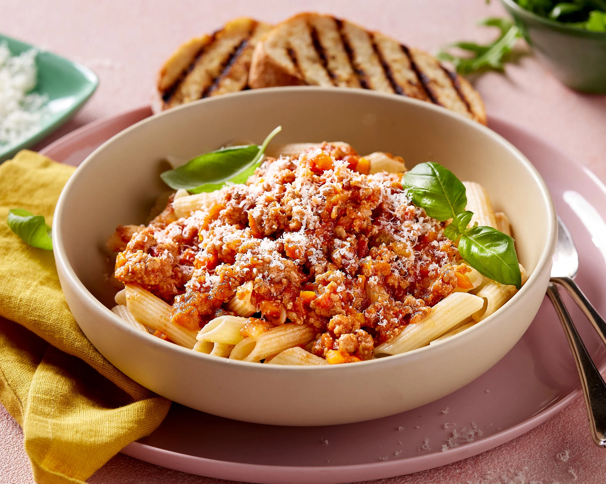

Penne Bolognese

Description
For a quick and easy home cooked meal, this Penne Bolognese is packed with flavour and requires minial effort, using ingredients generally kept/stocked in the pantry. For those nights you come home from work and need something quick and simple, yet delicious.
This recipe can be altered to suit what's in your pantry - separating the 'must have' ingredients from the 'optional' allows you the flexibility to add or takeaway the flavours you wish.
Recipe serves 4.
Ingredients
Must Have:
- 500g Beef Mince
- 500g Dolmio Bolognese Pasta Sauce (x1 jar)
- 300g Penne Pasta
Optional:
- 1 Tbsp Olive Oil
- 1 Diced Brown Onion or 1 Tbsp Onion Powder
- 1 Diced Carrot
- 1 Tbsp Minced Garlic or 1 Tbsp Garlic Powder
- 1 Tbsp Salt
- Grated Paremesan Cheese
Directions
Bolognese Sauce:
- Heat oil in a large pan or deep skillet over medium high heat. Add onion, carrot and garlic, cook for 5 minutes or until light golden and softened. Note: if using powder alternatives, add into next step with the mince and salt instead.
- Turn heat up to high and add beef and salt. Cook, breaking it up as your go, until browned.
- Add Dolmio Bolognese Pasta Sauce and stir. Keep on low simmer while cooking pasta in next steps. Add water if sauce gets too thick for your taste. Stir occasionally.
Pasta:
- Bring a large pot of salted water to boil.
- Add pasta and cook per packet directions.
Combine Sauce & Pasta:
- Once pasta has cooked, drain pot of water.
- Add pasta to bowls and serve sauce ontop.
- Garnish with parmesan cheese